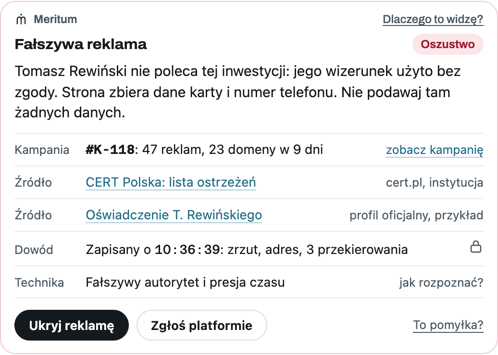

Pojedynczy fejk znika. Kolekcja zostaje.
Wtyczka oznacza fałszywą reklamę, zanim ktoś kliknie, i zapisuje dowód, nawet gdy reklama zniknie.

Makieta demo. Prezenter „Tomasz Rewiński” i domeny są fikcyjne.
Wtyczka oznacza fałszywą reklamę, zanim ktoś kliknie, i zapisuje dowód, nawet gdy reklama zniknie.

Makieta demo. Prezenter „Tomasz Rewiński” i domeny są fikcyjne.